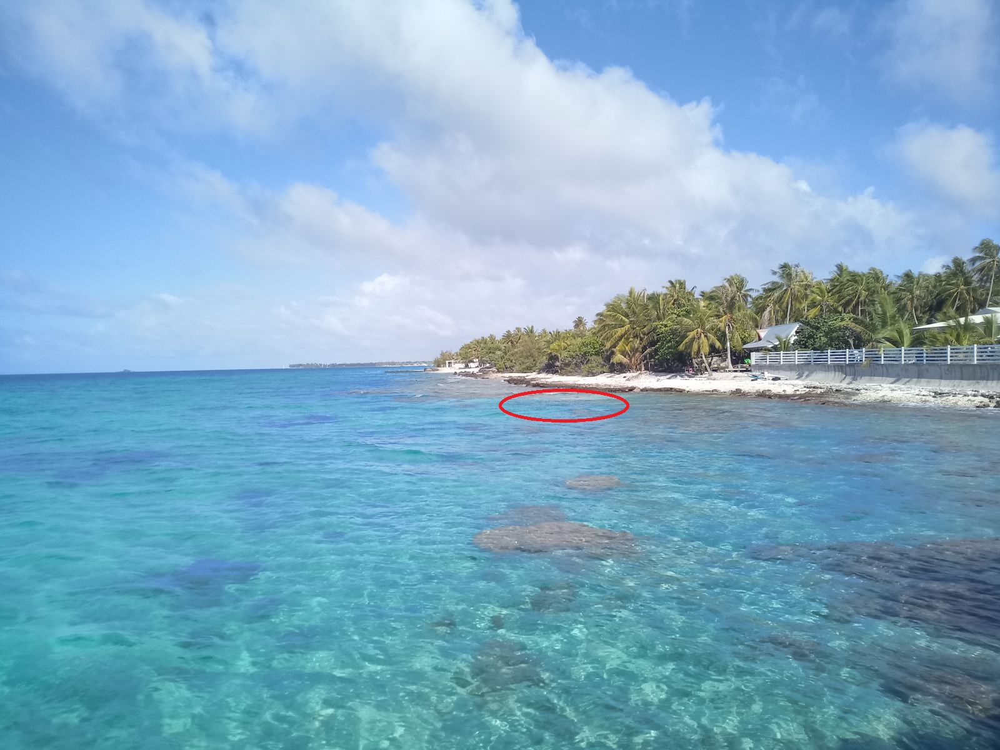
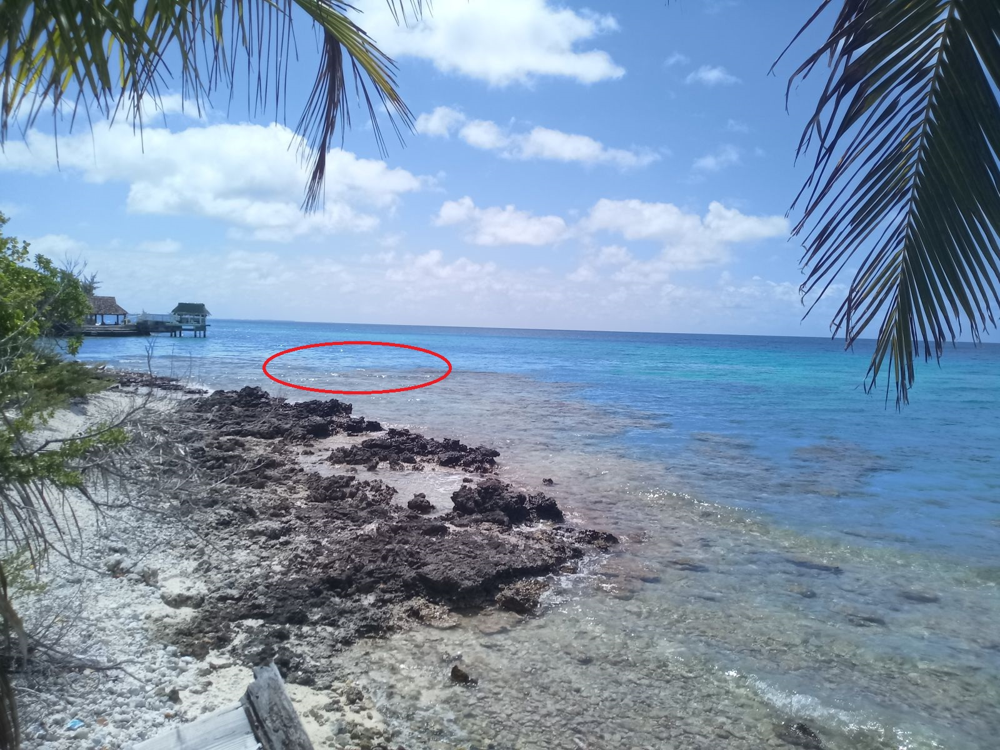

Conseils Pratiques
- Le bain de mer - Je vous conseille le bain à la mer vers la gauche, en face des maisons des gendarmes, car il y a un chenal avec du sable fin dans la mer, très agréable.
-



- Animations - La pension Cécile à 2 pas propose le jeudi soir un buffet avec un show polynésien.
- Règles de la maison et recommandations - .